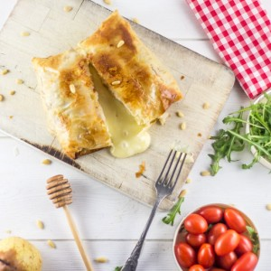
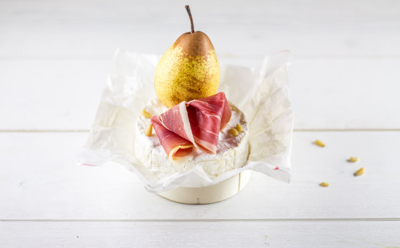
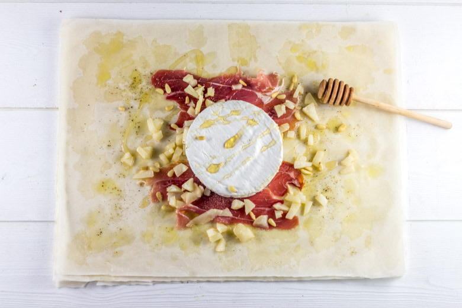
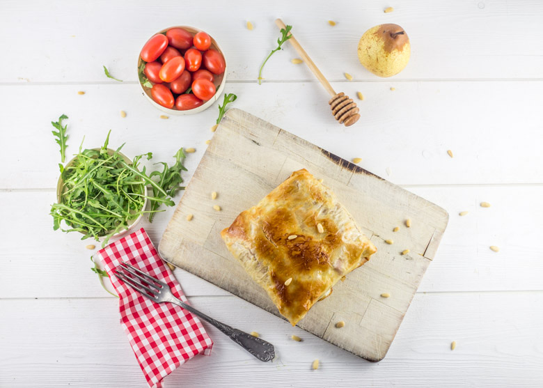
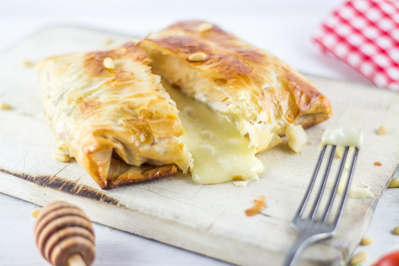

Camembert au four rôti so gourmand

Me revoilà aujourd’hui avec une recette ultra calorique, ultra gourmande et ultra délicieuse!! Un camembert au four qui cache pas mal de choses sous sa robe en pâte filo 😉
Je n’aime pas le froid, la pluie et la grisaille! Je dirais même que je déteste ça!! La seule raison que me retient d’hiberner en hiver c’est tout ce que l’on peut manger pendant cette période (et il y a Noël aussi lol)!! Car oui pour avoir des forces et combattre toutes les vilaines bébêtes qui nous veulent du mal il faut des réserves 😉 (c’est l’excuse que je me suis trouvée pour me donner bonne conscience et ça marche!) Entre tartiflettes, raclettes et compagnie tout est permis et notamment ce qui nous intéresse aujourd’hui: le camembert au four! C’est super calorique oui je vous l’accorde (surtout quand on s’en fait un chacun^^) mais mon dieu que ça fait du bien (de temps en temps)!
Je suis une grande adepte de la pâte filo, vous trouverez d’ailleurs des recettes ICI et LA où je l’utilise car j’aime beaucoup l’aspect feuilleté qu’elle apporte. Cependant, pour cette recette vous pouvez tout à fait utiliser des feuilles de brick car je sais que c’est plus simple à trouver.
J’ai choisi de feuilleter mon camembert au four pour changer un peu de la recette classique qui consiste à enfourner le camembert et dans lequel il n’y a plus qu’à tremper du pain mais j’y ai aussi ajouté un peu plus de gourmandises 🙂 Entre miel, jambon de pays, pignons de pins et poire je pense que ce camembert au four a tout pour vous séduire et pour vous apporter les réserves nécessaires pour appréhender ce rude hiver!
Je vous laisse découvrir la recette et j’espère qu’elle vous plaira.
J’adooooore quand ça coule comme ça!!!!!!!
Ingrédients
- Camembert - 2
- Poire - 1
- Jambon de pays - 4 tranches
- Beurre - 15g
- Pâte filo - 8
- Oeuf - 1
- Pignons de pin
- Miel
Instructions
- Dans une poêle, faire fondre le beurre et faites y revenir à feu doux la poire coupée en dés pendant 10 minutes (la poire servira pour les deux camemberts)
- Réserver
- Étaler une première pâte filo sur votre plan de travail
- Badigeonner la à l'aide d'un pinceau d'un peu d'huile d'olive (très grossièrement)
- Répéter l’opération jusqu'à la quatrième pâte filo
- Sur le dessus de la quatrième pâte filo, déposer deux tranches de jambon de pays, la moitié de la poire, quelques pignons de pins et poivrer
- Poser le camembert dessus
- Arroser de miel
- Plier, la pâte filo en "carré"
- Badigeonner d’œuf battu à l'aide d'un pinceau pour rendre le tout bien doré à la cuisson
- Faites la même chose avec le deuxième camembert
- Enfourner à 180° pendant 18 minutes (vérifiez la cuisson, il faut que le dessus soit bien doré!)




Les tips de la communauté
Recette simple et apéritif très apprécié. Les visiteurs soulignent sa facilité de réalisation et le résultat gourmand et fondant. C'est un plat convivial parfait pour partager entre amis ou en famille.
Astuces
- Utiliser un camembert frais pour meilleur goût
- Cuire juste ce qu'il faut pour que le fromage soit fondant mais pas coulant
- Servir immédiatement avec pain grillé ou biscuits
Variantes suggérées
- Ajouter des herbes aromatiques sur le dessus avant cuisson
- Accompagner avec miel ou confiture